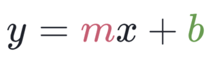
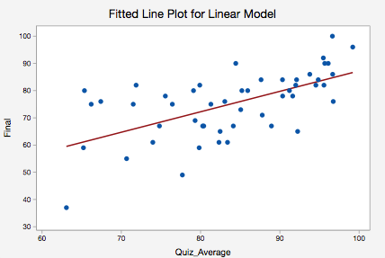
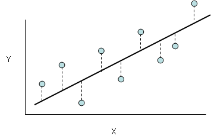
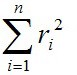
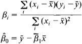
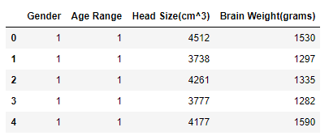
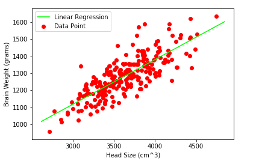
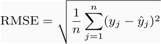
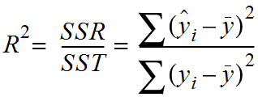

Data science is at its peak, using machine learning models you can do a lot, from predicting stock prices to generating a fake painting of the famous Mona Lisa (oh snap, that’s supposed to be a secret). Linear regression is one of the easiest to implement machine learning algorithms, We would explore this algorithm in the post.
What is Linear Regression?
Linear Regression is a method used to define a relationship between a dependent variable (Y) and independent variable (X). Which is simply written as :

Where y is the dependent variable, m is the scale factor or coefficient, b being the bias coefficient and X being the independent variable. The bias coefficient gives an extra degree of freedom to this model. The goal is to draw the line of best fit between X and Y which estimates the relationship between X and Y.
But how do we find these coefficients, We can find these using different approaches. One is the Ordinary Least Mean Square Method approach and the Gradient Descent approach. We will be implementing the Ordinary Least Mean Square Method.
Ordinary Least Mean Square
Earlier we discussed estimating the relationship between X and Y to a line. For example, we get sample inputs and outputs and we plot these scatter point on a 2d graph, we something similar to the graph below :

The line seen in the graph is the actual relationship we going to accomplish, And we want to minimize the error of our model. This line is the best fit that passes through most of the scatter points and also reduces error which is the distance from the point to the line itself as illustrated below.

And the total error of the linear model is the sum of the error of each point. I.e. ,

ri = Distance between the line and ith point.
n =Total number of points.
We are squaring each of the distance’s because some points would be above the line and some below. We can minimize the error of our linear model by minimizing r thus we have

where x¯ is the mean of the input variable X and y¯ being the mean of the output variable Y.
Now let's implement this method in python (the fun part).
To follow on, you need python and your awesome self. Using pip we would install the following dependencies
numpy
pandas
matplotlib
We are going to be using a dataset containing head size and brain weight of different people. This dataset is available in this repo.
We start by importing the dataset and our dependencies
#import libraries
%matplotlib inline
import numpy as np
import matplotlib.pyplot as plt
import pandas as pd
dataset = pd.read_csv('dataset.csv')
print(dataset.shape)
dataset.head()
(237, 4)

Let's find the relationship between the Head Size and Brain weights.
# initializing our inputs and outputs
X = dataset['Head Size(cm^3)'].values
Y = dataset['Brain Weight(grams)'].values
# mean of our inputs and outputs
x_mean = np.mean(X)
y_mean = np.mean(Y)
#total number of values
n = len(X)
# using the formula to calculate the b1 and b0
numerator = 0
denominator = 0
for i in range(n):
numerator += (X[i] - x_mean) * (Y[i] - y_mean)
denominator += (X[i] - x_mean) ** 2
b1 = numerator / denominator
b0 = y_mean - (b1 * x_mean)
#printing the coefficient
print(b1, b0)
# output : 0.26342933948939945 325.57342104944223
Now we have our bias coefficient(b) and scale factor(m). In mathematical terms :
Brain weights = 325.57342104944223 + 0.26342933948939945 * Head size
Now we have a linear model.
Lets plot it graphically.
#plotting values
x_max = np.max(X) + 100
x_min = np.min(X) - 100
#calculating line values of x and y
x = np.linspace(x_min, x_max, 1000)
y = b0 + b1 * x
#plotting line
plt.plot(x, y, color='#00ff00', label='Linear Regression')
#plot the data point
plt.scatter(X, Y, color='#ff0000', label='Data Point')
# x-axis label
plt.xlabel('Head Size (cm^3)')
#y-axis label
plt.ylabel('Brain Weight (grams)')
plt.legend()
plt.show()

We need to able to measure how good our model is (accuracy). There are many methods to achieve this but we would implement Root mean squared error and coefficient of Determination (R² Score).
Root Mean Squared Error is the square root of the sum of all errors divided by the number of values, or Mathematically,

Here yj^ is the ith predicted output values. Now we will find RMSE.
rmse = 0
for i in range(n):
y_pred= b0 + b1* X[i]
rmse += (Y[i] - y_pred) ** 2
rmse = np.sqrt(rmse/n)
print(rmse)
#output : 72.1206213783709
Let's find our R² score to be able to measure the accuracy of our linear model, mathematically :

SST is the total sum of squares and SSR is the total sum of squares of residuals.
R² Score usually ranges from 0 to 1. It will also become negative if the model is completely wrong. Now we will find the R² Score.
sumofsquares = 0
sumofresiduals = 0
for i in range(n) :
y_pred = b0 + b1 * X[i]
sumofsquares += (Y[i] - y_mean) ** 2
sumofresiduals += (Y[i] - y_pred) **2
score = 1 - (sumofresiduals/sumofsquares)
print(score)
#output : 0.6393117199570003
0.63 is certainly not bad, but we can improve the score by :
Getting more datasets ,
Improving the features ,
Fit many models etc